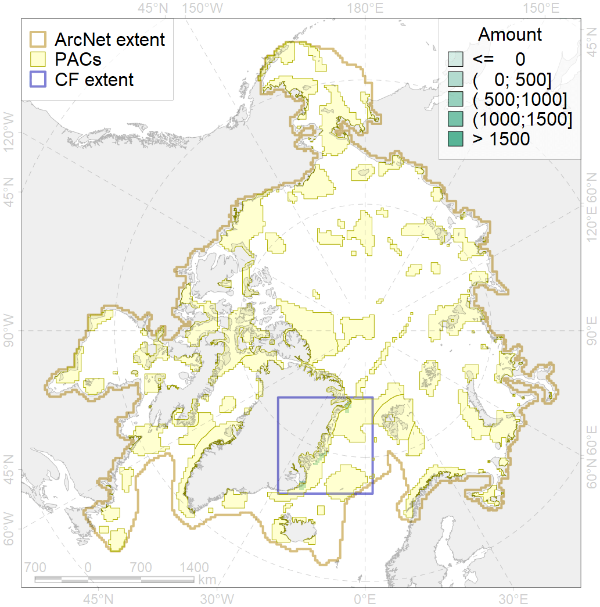
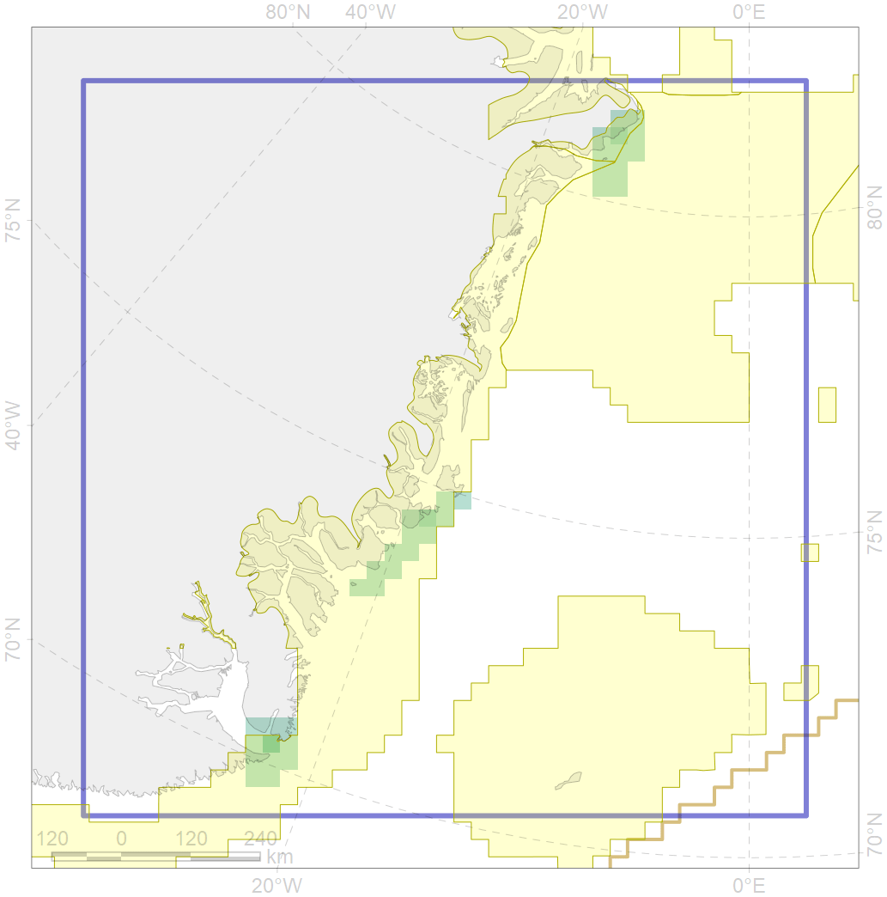

3122

| CF ID | 3122 |
| CF Name | Polynyas distribution in the East Greenland region |
| Time Period | 1998 – 2018, adopted for recent changes |
| Source(s) | AARI ice charts, CIS ice charts |
| Seasonality | Spring |
| Depth Horizon | Sea level (0m) |
| Methodology | Timeseries analysis for spatial locals |
| Author Name | Nikita Platonov |
| Notes | |
| Conservation Target Set in the Scenario | 0.12 |
| Conservation Target Achieved in the Scenario | 0.964 (Scenario: 803.6%) |
| PAC ID | Proportion in the PAC | Contribution to ArcNet Target Achievement | PAC’s Contribution to the Achieved Target |
|---|---|---|---|
| 29 | 6.1% | 50.8% | 6.3% |
| 32 | 60.4% | 484.7% | 60.3% |
| 33 | 31.6% | 263.2% | 32.8% |
| inner | 98.1% | 798.7% | 99.4% |
| outer | 1.9% | 4.9% | 0.6% |